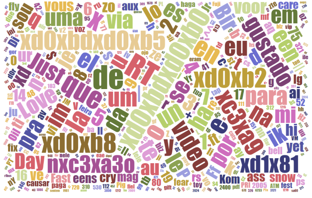

Possess 2 years of experience in analytics at economic consulting firm and social start-up. Currently pursuing a master in Business Analytics from Gabelli School of Business, Fordham University. Passionate about big data, machine learning and data visualization. Experience in Python, R, Tableau and SQL
I love to create beautiful charts that convey meaningful stories and bring values to businesses and society. As a hard core fan of Rap and classical music, I also enjoy building music recommender with machine learning. Both G-eazy and Mozart channel energy to me while I'm coding. I am a puppy-lover with island fever. I enjoy motorbike-riding and playing piano. My favourite pieces are Canon in D and Moonlight
Bots on Twitter are accounts that are controlled by computer programs, automatically producing content, and interacting with other accounts. These programs are turned on and off without following a pattern, making them hard to identify. Some bots only exist for providing some interesting tweets to users daily, but some bots are intentionally spreading disturbing or misleading information, which negatively impacts users’ experiences. Those malicious bots indirectly hurt Twitter’s image and business revenue. Although Twitter has already been able to identify most of the bot accounts, the company could have done better in Malicious Bots Classification. Therefore, this project propose a novel bot type classification method by using TFIDF. With the supervised machine learning method, this study aims to detect malicious Twitter bot types based on bot behaviors and text analysis.
BIG PICTURE
During the modeling process, the primary source of input data is bots' IDs from Bot Repository. I use Python to crawl users'information and tweets based on these IDs.
The process is divided into two phase. In phase one, I started off with features extraction with Twitter's metadata then tested multiple supervised machine learning models, such as Decision Tree, Random Forest, and Logistic Regression with IBM SPSS Modeler platform to create testing model with 13 significant indicators to predict behaviors of certain malicious bot types. In phase two, to further improve on the result, I created a dictionary for each type of malicious bots and calculated the TFIDF of keywords in the dictionary of each tweet. Then I again applied the most accurate model from phase one with additional TFIDF features. Finally I got a Random Forest that can predicted malicious bots correctly of 91.68% on the testing set.
BASELINE MODEL
To start off with the baseline model, I first gained interest of using behavior patterns as prediction targets from multiple research papers. The selection includes three major malicious bots: Fake Follower, Scam Bot, and Spam Bot.
The raw data set includes 900 IDs for each kind of malicious bots from Bot Repository, reaching 2,700 IDs in total. From 2,700 IDs, I used Twitter API and Tweepy to crawl twitter's metadata and tweets. Since some accounts have been banned and might not have any tweet, I got 2,042 valid account and crawled 250 tweets for each account. In total, there are 138,042 tweets for Fake Followers, 160,245 tweets for Scam Bots, and 161,956 tweets for Spam Bots.
PHASE ONE - BAD BOT-LIKE BEHAVIOR DETECTION
In phase one, typical features of tweet syntax, temporal behavior and user profile are used to build a model that identifies different types of malicious bots. After testing multiple models, I decided to use Random Forest since it results in the highest accuracy rate. For your information, Random Forest is a classification algorithm consisting of many decision tree. I used IBM SPSS to build an uncorrelated forest of trees to predict the type of malicious bots based on 13 identified fields of account's behaviors. The features include user ID for each twitter account, average number of retweets of tweets for each account, average number of times tweets favorited by twitter users for each account, bot type, bot group, number of followers, number of friends, number of tweets for each account, a binary feature of default profile (yes/no), a binary feature of using default profile image, if geo-location is turned on, average number of tweets posted daily per account, and percentage of tweets containing URL or hyperlink for each account.
The target of the Random Forest model is bot group, which containing three nominal values of Fake Followers, Scam Bots, and Spam Bots. The data was partitioned into 70% of the training set and 30% of the testing set. The Random Forest test classified malicious bots with a high level of accuracy, 99.43% correctly on training data, and 91.05% on testing data. Since the training set may be overfitting, I focused on the testing set. Regarding the testing set, the model performed best at predicting Spam Bots, with accuracy of 96.226%, following by Fake Followers and Scam Bots, with accuracy of 89.862% and 87.019%, respectively. Overall, the Random Forests can be applied to classify malicious bot types with the features above at a high level of accuracy.
The Random Forests Classification applied nine predictor inputs to train 1405 records, which is 70% of the dataset. The result indicated that some features matter more than others. Pertaining malicious bot behaviors classification, the model identified the most important predictor as average of retweet count, following by number of followers, average daily tweet, number of tweets, number of friends, percentage of tweets containing URL or hyperlink per account. Using the default profile, the average number of favorites and turning on geo-location do not demonstrate significant results for classification.
PHASE TWO - BEHAVIORAL FEATURES AND TEXT SEMANTICS DETECTION
In phase two, I used Python package NLTK to get keywords dictionary and frequency of each keyword for 216,173 tweets. I calculated every term's frequency for each group of malicious bots. I set he threshold for term frequency rate is 0.05%. I picked every term with that is larger than the threshold to create detection dictionaries for fake followers, scam bots, and spam bots. To calculate fitting degree of each tweet with three dictionaries, I used Python and Excel to calculate they keywords' TFIDF in each tweet and see whether these dictionaries contribute to our prediction. Finally, I normalized TFIDF of each tweet to make sure they are under the same weight then calculated the average normalized TFIDF of each account. Wordcloud are used to check the term frequency, and the results of Word Cloud were consistent with the TFIDF calculation.
In short, Fake Followers have the lowest TFIDF score in all three dictionaries and a little better match in Fake Follower dictionary, probably due to their small number of tweets. Scam Bots are in the middle, and Spam Bots have high TFIDF in all three dictionaries and especially in the spam dictionary. Spam Bots do post tons of tweets, and the result indicates that there are some words in the spam dictionary that have discriminative power to distinct Spam Bots from other bots. We added these three average TFIDF as our new features in our detection model and built a new model to see whether these three new features can contribute to our overall accuracy.
Spam bot's Tweets WordCloud
Scam bot's Tweets WordCloud
Fake Follower's Tweets WordCloud

The Random Forest Classification applied 12 inputs as predicting factors to train 1405 records again. The dataset was partitioned into 70% of the training set and 30% of the testing set. Adding three new inputs of average TFIDF scores of Fake Followers, Scam Bots, and Spam Bots, the model produced a new list of important indicators. The top three indicators now are average of retweet count for each tweet, the number of followers, and average TFIDF score of the spam bot. According to the result, the TFIDF score plays a significant role in classifying types of malicious bots. This new model predicted malicious bots correctly of 91.68% on the testing set.
EVALUATION
In general, the model of phase two performed slightly better than the model of phase one based on the comparison of accuracy. I can’t tell whether it’s due to the new features or the random error. However, one thing I am sure about is that the TFIDF certainly contributes to analyze the bot types as the model could predict correctly of 81.16% on the testing data when I only used these three features to detect different kinds of malicious bots.
CONCLUSION
In this project, I combined supervised machine learning and natural languague processing to classify different types of malicious bots on Twitter. After intensive research of related works, I found out that even though most of them researched about bot identification, and even though some of them also studied malicious bots identification, none of them use keyword detection.
This project targets on malicious accounts' tweets as a means to build keyword dictionaries. Both detection tools are more and more advanced, but bots are also becoming more human-like, which makes them more complicated to detect. I focus on finding features related to natural language.
In phase two, I trained a Random Forest classifier using the features of average TFIDF score of keywords in each type dictionary. I was able to create a multi-class classifier that performs with 91.68% of accuracy when classifying into one of 3 classes.
Overall, Fake Followers are inactive accounts with the highest score of TFIDF_fake, Scam Bots are also inactive accounts but with high retweet counts and the highest score of TFIDF_scam, and Spam Bots are active accounts with the highest score of TFIDF_spam. Besides, I can predict Spam Bots the best using the TFIDF score since TFIDF_spam is in the top three important indicators of the model.
REFERENCES
[1] Stefano Cresci et al. The paradigm-shift of social spambots. arXiv:1701.03017v1 [cs.SI] 11 Jan 2017. Available at: https://arxiv.org/abs/1701.03017
[2] Cresci-2017 and Pronbots-2019 : https://botometer.iuni.iu.edu/bot-repository/datasets.html. Accessed: 2019-11-26.
[3] Lulwah Ahmad AlKulaib. Twitter Bots Multiclass Classification Using Bot-Like Behavior Features. B.S. in Computer Science, Gulf University for Science and Technology, June 2011.
[4] Efthimion, Phillip George; Payne, Scott; and Proferes, Nicholas (2018) "Supervised Machine Learning Bot Detection Techniques to Identify Social Twitter Bots," SMU Data Science Review: Vol. 1: No. 2, Article 5. Available at: https://scholar.smu.edu/datasciencereview/vol1/iss2/5.
BIG PICTURE
This project aimed to build an useful and comprehensive music recommendation system based on the Million Song Dataset and musiXmatch dataset. In details, the two datasets include data of user listening history, song metadata, artist metadata, artist similarity, and lyrics. To build the recommendation systems, three algorithms were employed, including popularity-based, collaborative filtering, and content-based in order to generate three different recommendation lists - Hot Song List, Personal List, and New User List. Those algorithms were compared and combined to establish recommending strategy for different scenarios and users. ALS algorithm was used for a personal recommendation, and lyric-based and artist-based similarity recommendation was employed to solve the cold-start problem. The whole system was built with Python and PySpark on Google Cloud Platform and AWS.
In this project, we want to focus on the streaming music industry. The potential benefits of a state of art recommendation system are valuable for streaming music industry. Some possible benefits include the improvement of user retention and engagement as well as a comprehensive understanding of customers' taste and the changing trend of their tastes.
DATASET DESCRIPTION
The Million Song Dataset was originally started as a collaborative project between The Echo Nest and LabROSA. The dataset contains metadata, or derived features, for one million songs. The size of the entire data scales is up to 280GB. The Million Song Dataset is also a cluster of seven complementary datasets provided by the community. In this project, besides the subset, Taste Profile and musiXmatch are used to build the music recommendation system.
Regarding the Million Song subset, besides 1,000,000 unique tracks ID data, the song metadata, the links between artist ID and the tags, and artists’ similarity were extracted using the SQLite databases. For artists, the artists’ location data was also used.
The Taste Profile subset contains user listening history. The dataset scales up to 488MB, including 1,019,318 unique users, 384,546 unique MSD songs, and 48,373,586 user-song-play count triplets.
The musiXmatch dataset provides official lyrics collection of the Million Song Dataset in the bag-of-words format as well as the full mapping of MSD IDs to musiXmatch IDs. The mapping comes as a text file, including 779 thousand matches. The lyrics are directly associated with Million Song Dataset tracks regarding similar artists, tags, years, and audio features. We extracted the lyrics with the SQLite database. Each track is described as the word-counts for a dictionary of the top 5,000 words across the set. The split of training and testing was done according to the split for tagging, regarding tagging test artists. There are 210,519 training bag-of-words, 27,143 testing ones. The dataset contains track ID, mxm ID, word of lyrics, and frequency of the words features.
After mapping all the musiXmatch IDs, track ID, and song ID from listening history, the final dataset scaled up to 3GB.